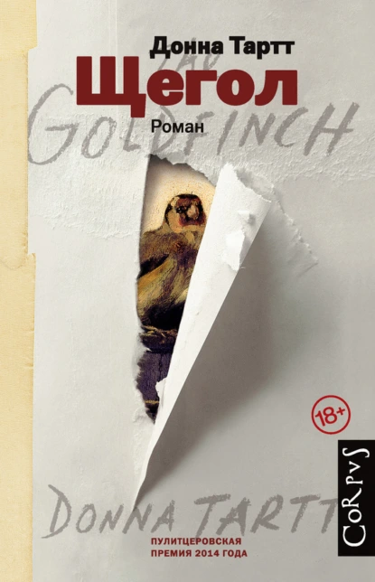

Донна Тартт
Год издания: 2013
Жанр: Роман воспитания, драма
Страниц: 771
Награды: Пулитцеровская премия (2014)
Синопсис
"Щегол" - третий роман Донны Тартт, удостоенный Пулитцеровской премии. История начинается с террористического акта в музее Метрополитен, где тринадцатилетний Тео Декер теряет мать, но спасает маленькую картину Карела Фабрициуса "Щегол".
Роман прослеживает жизнь Тео на протяжении следующих лет, когда он переезжает из Нью-Йорка в Лас-Вегас, а затем возвращается обратно, всегда храня украденный шедевр. Книга исследует темы искусства, потери, судьбы и искупления.